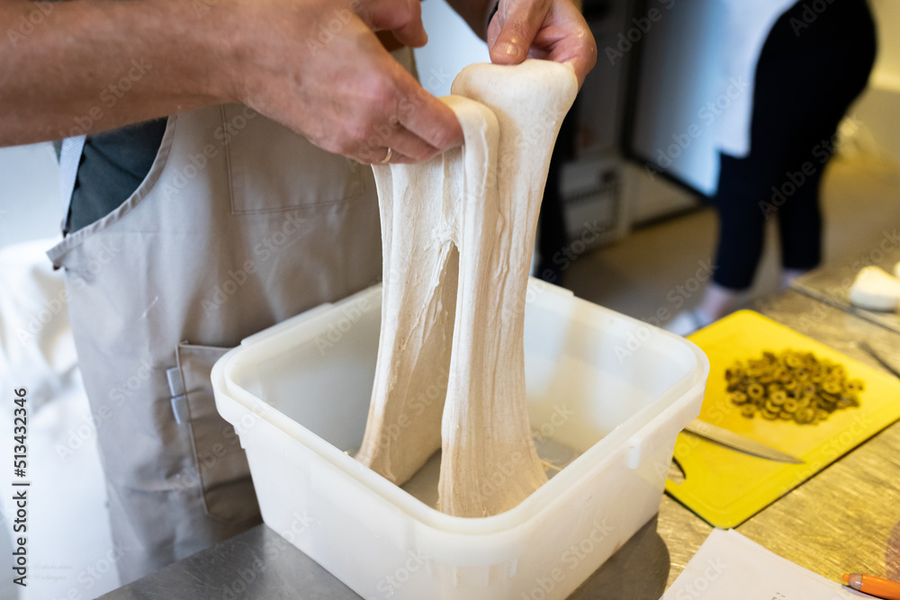
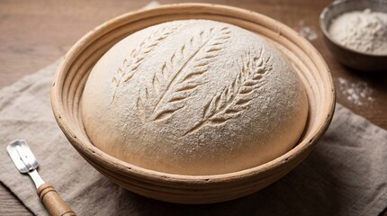
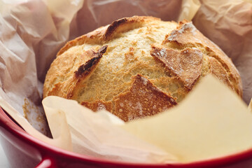

Sourdough Techniques
These are the key skills that make the difference between a dense brick and an open, airy loaf. All hard-won, all worth learning.
What Happens Inside the Dough
During bulk fermentation, your starter's wild yeast is consuming sugars and producing CO₂. The gluten network traps those gas bubbles — that's what gives you your open crumb.
Typical Bulk Fermentation Progress
Aiming for ~75% volume increase before shaping
Animated: A sourdough loaf rising and steaming — CSS animation
The Techniques That Matter
Stretch & Fold
Instead of traditional kneading, sourdough uses a series of gentle stretch-and-fold sets during bulk fermentation. This builds gluten strength without degassing the dough.
💡 My Approach
I do 4 sets: every 30 minutes in the first 2 hours. After that, the dough rests undisturbed for 4-6 hours.Then I let my dough bulk ferment in the fridge, overnight (8-12hours).
Bulk Fermentation
The most important — and most misunderstood — stage. Too short and the dough is under-fermented; too long and it collapses. Read the dough, not just the clock.
🌡 Temperature Note
At 78°F (25°C) I target 4–5 hours. At 68°F (20°C) it can be 6–8 hours. A warmer spot in the kitchen changes everything.
Shaping
Good shaping creates surface tension that supports the loaf's rise and helps it hold its structure in the oven. It takes practice — expect the first dozen to be imperfect.
✂️ The Key
Less is more. A few confident movements beats a lot of fumbling. Watch the video on the Recipes page for my shaping method.
Scoring
Scoring controls where your loaf opens during the oven spring. A confident single slash or decorative pattern — the angle of the blade matters as much as the path.
📐 Blade Angle
For an ear, hold the lame (blade) at roughly 30–45° to the dough surface. Perpendicular scores give a more even open pattern.
Common Problems & Fixes
Things I've gotten wrong, diagnosed, and fixed. This table grows every time I mess up a bake.
| Problem | Likely Cause | Fix |
|---|---|---|
| Dense, gummy crumb | Under-fermented or under-baked | Extend bulk fermentation; use a thermometer (internal temp should reach 205–210°F) |
| Flat loaf, no oven spring | Over-fermented or weak starter | Check starter peak activity; reduce bulk time; ensure dough is cold before baking |
| Very sour flavour | Long cold retard or over-ripe starter | Shorten fridge time; use starter at peak (not past) |
| Score doesn't open | Blade too shallow, dough too warm | Score confidently and deeply; bake straight from fridge |
| Crust too pale | Oven not hot enough or steam trapped | Preheat Dutch oven longer; ensure lid seal is good for first 20 min |
Technique Photos


